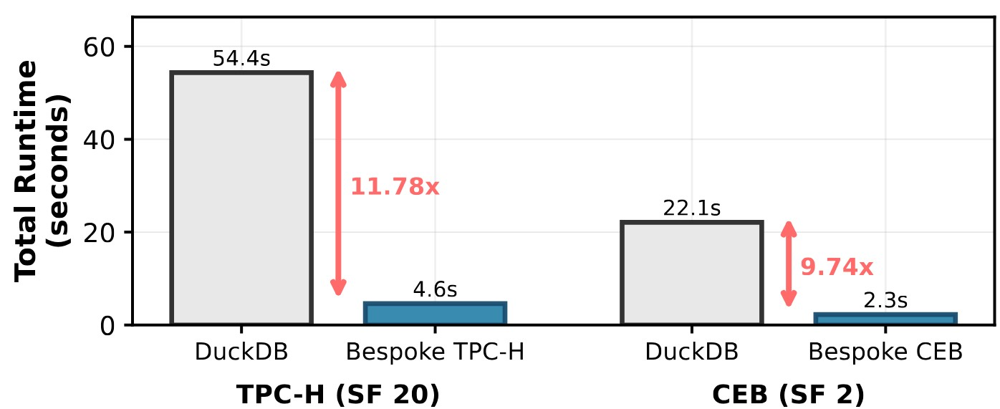
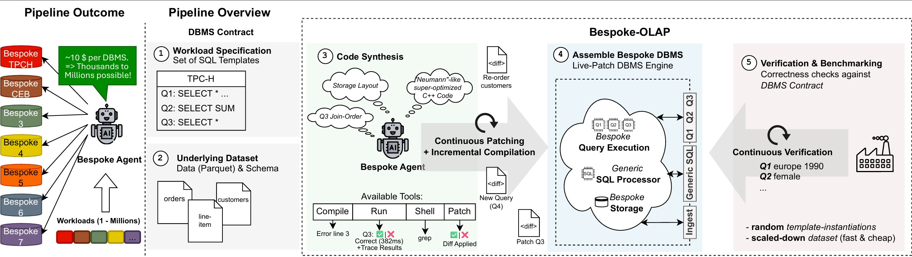

Modern OLAP engines are designed to support arbitrary analytical workloads, but this generality incurs structural overhead, including runtime schema interpretation, indirection layers, and abstraction boundaries, even in highly optimized systems. An engine specialized to a fixed workload can eliminate these costs and exploit workload-specific data structures and execution algorithms for substantially higher performance. Historically, constructing such bespoke engines has been economically impractical due to the high manual engineering effort. Recent advances in LLM-based code synthesis challenge this tradeoff by enabling automated system generation. However, naively prompting an LLM to produce a database engine does not yield a correct or efficient design, as effective synthesis requires systematic performance feedback, structured refinement, and careful management of deep architectural interdependencies. We present Bespoke OLAP, a fully autonomous synthesis pipeline for constructing high-performance database engines tightly tailored to a given workload. Our approach integrates iterative performance evaluation and automated validation to guide synthesis from storage to query execution. We demonstrate that Bespoke OLAP can generate a workload-specific engine from scratch within minutes to hours, achieving order-of-magnitude speedups over modern general-purpose systems such as DuckDB.
Watch the agent autonomously optimize a generated C++ engine in real time.
The Bespoke agent iteratively patches, compiles, and benchmarks the generated engine.
Run Bespoke-generated queries against real data directly in your browser.
Single-threaded total runtime across all 22 TPC-H / all CEB queries. All systems pinned to a single core, in-memory. Lower is better. Bespoke engines synthesized with GPT 5.2 Codex.
| # | System | Total Runtime | vs DuckDB |
|---|---|---|---|
| 1 | Bespoke OLAP Ours Best | 10.74× | |
| 2 | Umbra | 2.73× | |
| 3 | DuckDB | 1.00× (baseline) | |
| 4 | ClickHouse | 0.06× |
| # | System | Total Runtime | vs DuckDB |
|---|---|---|---|
| 1 | Bespoke OLAP Ours Best | 11.78× | |
| 2 | Umbra | 2.66× | |
| 3 | DuckDB | 1.00× (baseline) |
| # | System | Total Runtime | vs DuckDB |
|---|---|---|---|
| 1 | Bespoke OLAP Ours Best | 9.76× | |
| 2 | DuckDB | 1.00× (baseline) |

A fully automated 3-stage pipeline from workload specification to a validated, optimized C++ engine.
The LLM agent analyzes the SQL query templates and the schema, then designs a custom storage layout — choosing column encodings, sort orders, and materialized join artifacts — tailored to the specific access patterns of the target workload.
From the storage plan, the agent generates a complete C++ engine: a loader (Parquet → raw layout), a builder (raw layout → bespoke database), and query executors for each SQL template. All code is compiled and validated for correctness against DuckDB reference results.
The agent enters an iterative loop: profile → identify bottleneck → apply patch → compile (hot-reload) → re-run → check speedup. The loop continues until the speedup converges or a turn budget is exhausted. Each state is snapshotted in git for full reproducibility.
End-to-end pipeline from workload specification to a verified, benchmark-ready engine.

Since publication, we have extended Bespoke OLAP with additional LLM backends and database baselines. Results will be added to the leaderboard as they are finalized.
The paper uses GPT 5.2 Codex. We have additionally run Bespoke OLAP with the following models:
Expanding comparisons beyond DuckDB to include more production OLAP systems:
If you use Bespoke OLAP in your research, please cite:
@article{wehrstein2025bespokeolap,
title = {Bespoke OLAP: Synthesizing Workload-Specific One-Size-Fits-One Database Engines},
author = {Wehrstein, Johannes and Eckmann, Timo and Jasny, Matthias and Binnig, Carsten},
journal = {arXiv preprint arXiv:2603.02001},
year = {2025},
url = {https://arxiv.org/abs/2603.02001}
}